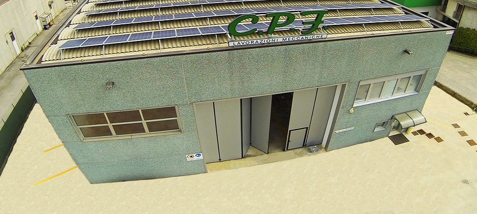
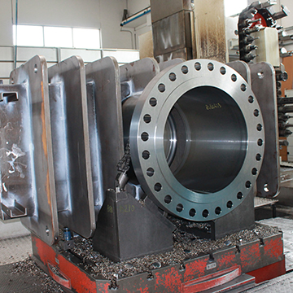

Since its creation in 1975, C.P.F. he has always worked with one well-designed concept: "he works every piece according to a humiliated standard". The principle has proved so convincing that over thirty years later there is little doubt that the Company is the pre-eminent in the field of body processing. Todat C.P.F. uses his experience to create added value and premium quality for his customers. Its highly automated machine tools and the technological know-how of its technicians allow C.P.F. to meet all the processing needs related to valve bodies, of any type. C.P.F. it has a high level machinery fleet, coming from a careful and targeted investment policy, to keep the Company constantly updated.
.jpg)
 CPF Meccanica was founded in 1978 and has specialized mainly in the production of high precision mechanical transmission parts which are used in various industrial sectors. Born as an artisan reality, today it is a company certified ISO 9001: 2015, OHSAS 18001: 2007 and UNI EN ISO 14001: 2015, technologically advanced and structured with state-of-the-art production plants that are constantly updated. Internally it employs highly qualified human resources to offer personalized answers to the most complex needs of customers. The production flexibility and the company automation allow today the realization of products at highly competitive prices all over the world, both in standard features and in more elaborate customizations.
 CPF Meccanica is a mechanical company that was founded in 1989 in Vicenza as a small mechanical company operating mainly in the nautical field. The founder and current president is Giorgio Speretta. The activity in the workshop of Caorle continues until 1996 when the company moves to a new location in La Salute di Livenza, in order to take advantage of a larger work environment that is more suited to new processing needs. Over the years, in fact, the field of applied mechanics for boating had seen alongside other types of machining, so that the needs for space and machinery had changed significantly. Finally, the company has moved into the current shed, which is always located at La Salute.